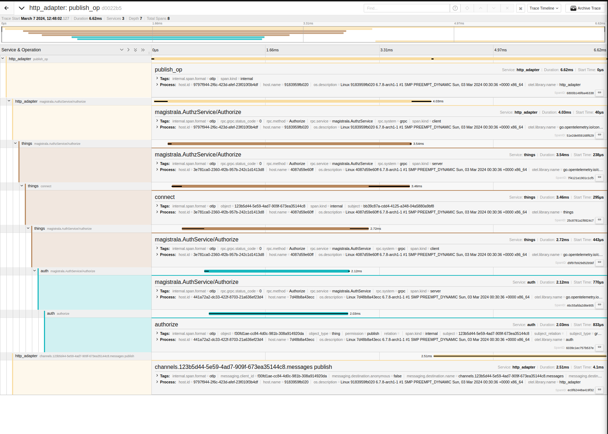
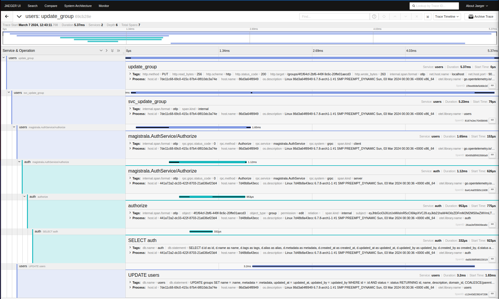
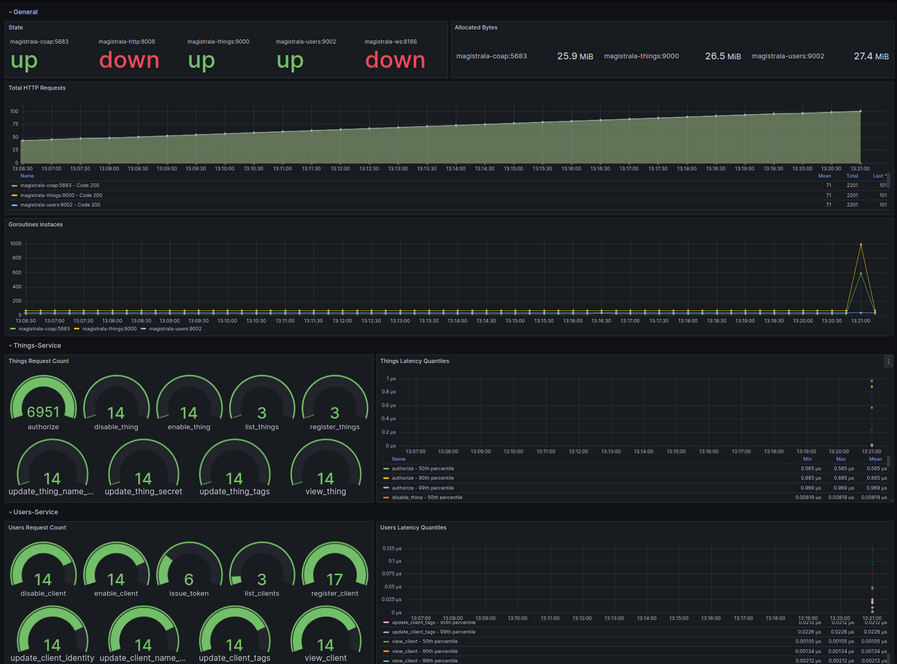

What's New in Magistrala v0.14.0#
We're thrilled to announce the release of Magistrala v0.14.0, packed with exciting new features and improvements that elevate your experience! This update marks a significant leap forward, making Magistrala even more powerful and versatile. Here are some of the highlights:
- Switched to Google Zanzibar Access control approach with SpiceDB
- Implemented Domains for access control
- Added UI as a separate service
- Returned Websocket support
- Added Invitation service
- Expanded compatibility across various MQTT brokers
- Added support for numerous event stores
- Enable Jetstream for NATS as the default event store and message broker
- Added support for gRPC mTLS
- Added graceful-stop for HTTP and gRPC servers
- Logical and hard entity deletion
- Improved tracing
- Improved event sourcing
- Added telemetry
- Added prometheus and grafana for metrics
- Upgraded InfluxDB from 1.x to 2.x
- Upgraded Postgres to 16.1
This is just a glimpse of the extensive changes in v0.14.0. For a complete list, check out the detailed changelog here for this release.
New Features#
Switched to Google Zanzibar Access control approach with SpiceDB#
We migrated our access control system from Ory Keto to SpiceDB. SpiceDB is an open-source, Google Zanzibar-inspired database system for real-time, security-critical application permissions. Initially, we attempted to build our access control system. However, we quickly recognized the inherent complexity of this task and the importance of domain expertise. We are confident that SpiceDB is the superior solution for our requirements. The PR for this change can be found here.
Implemented Domains for access control#
Magistrala now supports multi-tenancy with the introduction of domains! This exciting new feature allows for the separation of data and resources between different users or organizations. While we're still working on further refinements in future releases, we believe this marks a significant step forward for Magistrala. You can find the commit for this change on GitHub.
Added UI as a separate service#
With great enthusiasm, we present a significant upgrade to the Magistrala user interface: it's now a standalone service written in Golang! This exciting shift from a single-page Angular application brings several advantages. Firstly, maintaining a separate Golang service aligns better with our existing codebase, simplifying the development and upkeep of the UI. Secondly, this opens doors for easier extension and future functionalities. While there's still room for further development, especially regarding dashboards, this marks a major stepping stone for the UI's potential. We're actively exploring various dashboarding solutions and can't wait to share what's next! We dedicated an entire repository for the UI and it can be found here.
Returned Websocket support#
Remember the WebSocket adapter? We are happy to reveal its return to Magistrala, built from scratch for improved performance and exciting possibilities. This isn't just a revival – we're actively planning future features and even UI integration, allowing your interface to receive real-time messages directly. This opens doors for dynamic and efficient real-time communication, and we can't wait to see what you build! The PR for this change can be found here.
Added Invitation service#
Invitation service is a new feature in Magistrala. This service is responsible for sending invitations to users to join a domain. This is an essential feature for multi-tenancy. We currently don't support email invitations but we are planning to add it in future releases. This is because the Invitation services need to talk to the Users service to get the email of the user and we don't have the communication between services yet. We are planning to add this in future releases. The commit for this change can be found here
Expanded compatibility across various MQTT brokers#
The MQTT message broker is responsible for handling MQTT messages. We Expanded compatibility across various MQTT brokers. You can either use VerneMQ or NATS as the MQTT message broker. VerneMQ is a very popular MQTT message broker and was initially the only supported MQTT message broker. We decided to add support for NATS as the MQTT message broker because we believe that it is a great message broker and is very easy to use. Using NATS as an MQTT message broker you can simplify your infrastructure since it can be used as both the event store and the message broker. The PR for this change can be found here.
Added support for multiple event stores#
Magistrala takes a monumental leap forward in event handling with the introduction of multiple event store support. No longer limited to Redis, you now have the freedom to choose between NATS Jetstream and RabbitMQ alongside the familiar favourite. This decision stems from our unwavering commitment to empowering developers with powerful and user-friendly options. Using NATS or RabbitMQ as the event store you can simplify your infrastructure since it can be used as both the event store and the message broker. The PR for this change can be found here.
Added support for gRPC mTLS#
gRPC is a modern open-source high-performance Remote Procedure Call (RPC) framework developed by Google. It can efficiently connect services in and across data centres with pluggable support for load balancing, tracing, health checking and authentication. We use gRPC for inter-service communication in Magistrala. For example, if the user service wants to verify that user x can update user y, it will call the auth service to verify that user x can update user y. We use gRPC for this communication.
In TLS, the client verifies the server's certificate to ensure that it is connecting to the correct server. The server doesn't verify the client's certificate. Anyone who has the server's certificate can connect to the server. Mutual TLS or mTLS is a form of transport security that requires both the client and the server to present certificates to verify their identity. This is a more secure form of transport security than traditional TLS, which only requires the server to present a certificate. mTLS is a good choice for securing communication between services in a microservices architecture, where you want to ensure that both the client and the server are who they say they are. The PR for this change can be found here. This is enabled out-of-the-box and you don't need to do anything to enable it.
Added graceful-stop for HTTP and GRPC servers#
We added a graceful stop for HTTP and GRPC servers. This means that when you stop the server it will wait for all the requests to finish before it stops. This is a very important feature and we are very happy to have it in Magistrala. The PR for this change can be found here
Logical and hard entity deletion#
Logical deletion is a way to mark an entity as deleted without actually deleting it. This is done by changing its status to disabled. Hard deletion is a way to delete an entity from the database. We added support for both logical and hard entity deletion.
Improved tracing#
Distributed tracing is a way to trace a request as it goes through the system. We enhanced support for distributed tracing in Magistrala. We added support for distributed tracing over NATS and gRPC.


Improved event sourcing#
Event sourcing is a way to store data as events instead of the current state of the system in an append-only log. We improved support for event sourcing in Magistrala by:
- Adding event sourcing package which can be used to implement event sourcing in the different services. This package is used to store events in the event store and to retrieve events from the event store. This change can be found here.
- Emitting events from Users service and twins service.
- Reliably emitting events to the event store. This is by storing the events in a buffer if the event store is not available and then emitting the events to the event store when it becomes available. This change can be found here. This was for NATS since the library we were using for NATS did not support this feature.
Added telemetry#
Magistrala is committed to continuously improving its services and ensuring a seamless experience for its users. To achieve this, we collect certain data from your deployments. Rest assured, this data is collected solely to enhance Magistrala and is not used with any malicious intent. The deployment summary can be found on our website.
The collected data includes:
- IP Address - Used for approximate location information on deployments.
- Services Used - To understand which features are popular and prioritize future developments.
- Last Seen Time - To ensure the stability and availability of Magistrala.
- Magistrala Version - To track the software version and deliver relevant updates.
We take your privacy and data security seriously. All data collected is handled by our stringent privacy policies and industry best practices.
Data collection is on by default and can be disabled by setting the env variable: MG_SEND_TELEMETRY=false.
Added prometheus and grafana for metrics#
Prometheus is an open-source monitoring and alerting toolkit. Grafana is the open-source analytics and monitoring solution for every database. We added support for Prometheus and grafana for metrics. Prometheus is used to collect metrics from the different services and grafana is used to visualize the metrics. The PR for this change can be found here

Get ready to experience Magistrala like never before! This release is jam-packed with improvements, making it easier than ever to get started and navigate our features. We've also implemented a new wave of automated testing, ensuring rock-solid stability, and squashed those pesky bugs that were slowing you down. We're thrilled about the progress and can't wait for you to dive in! Don't hesitate to share your thoughts and feedback, as your input is invaluable to us. We're always here to help, so reach out with any questions you may have. Let's explore the exciting world of Magistrala together!